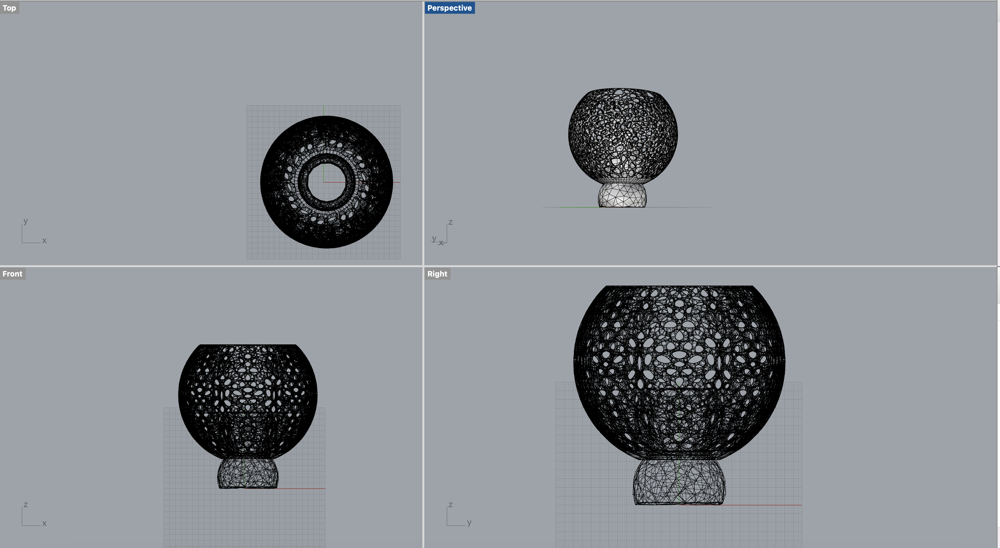
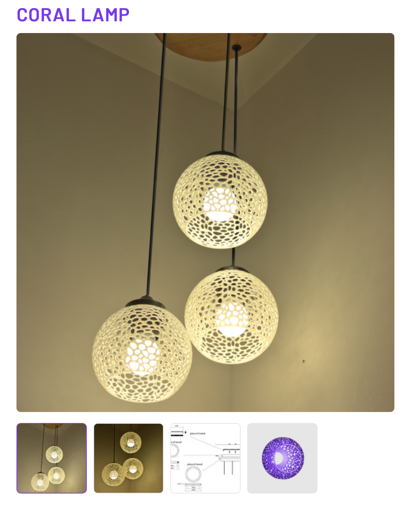
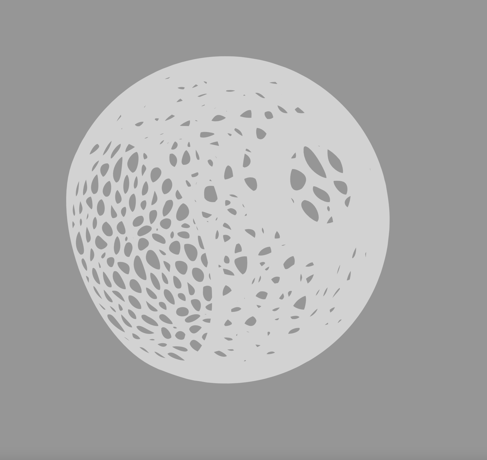
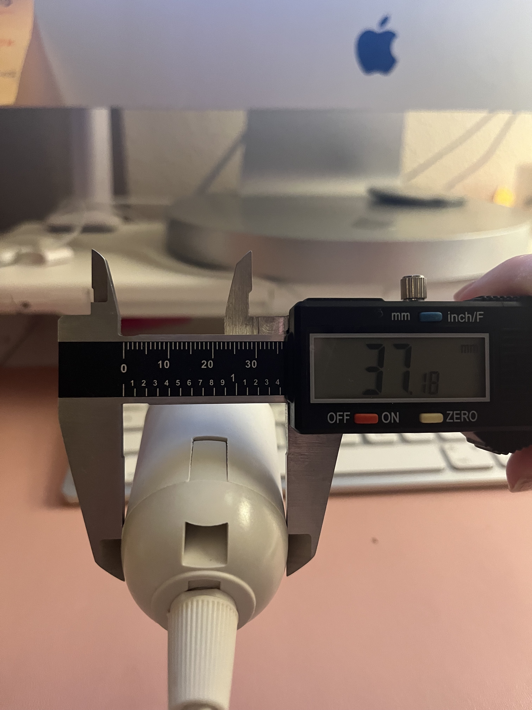
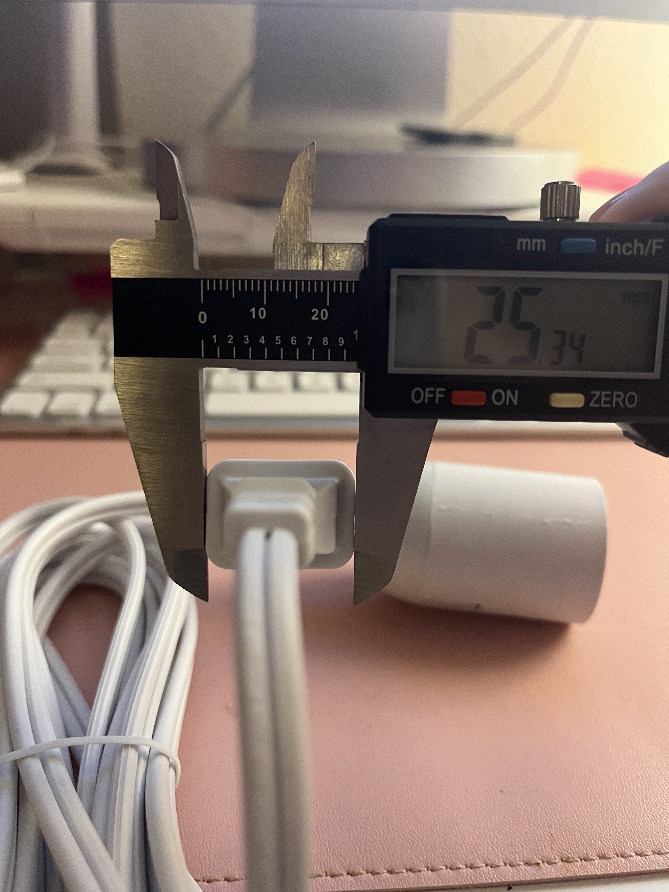
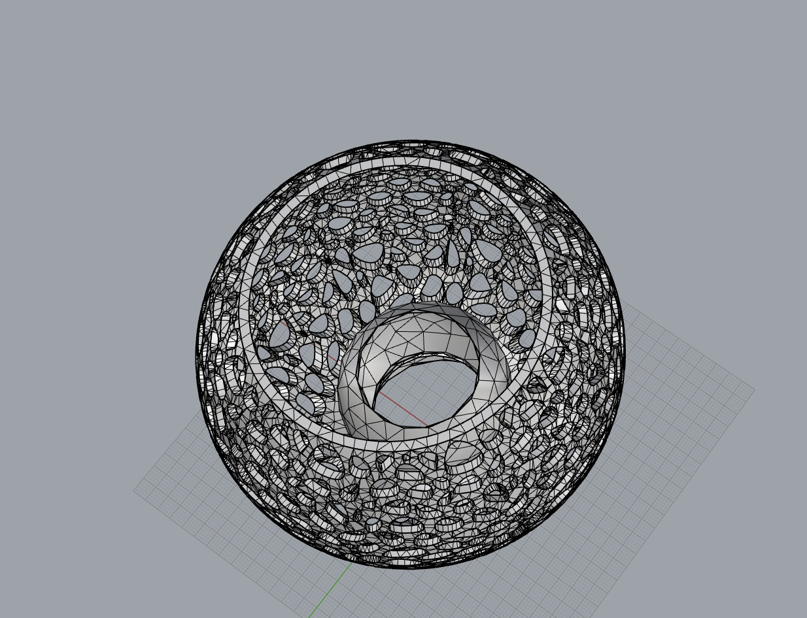
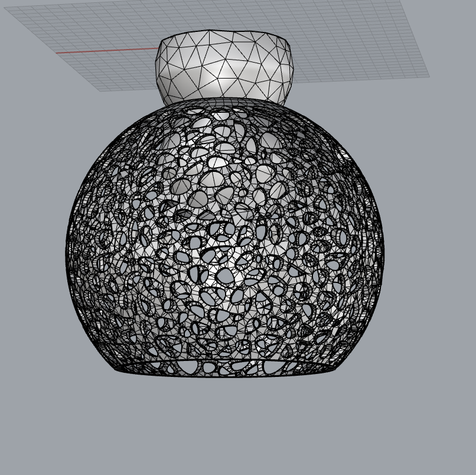
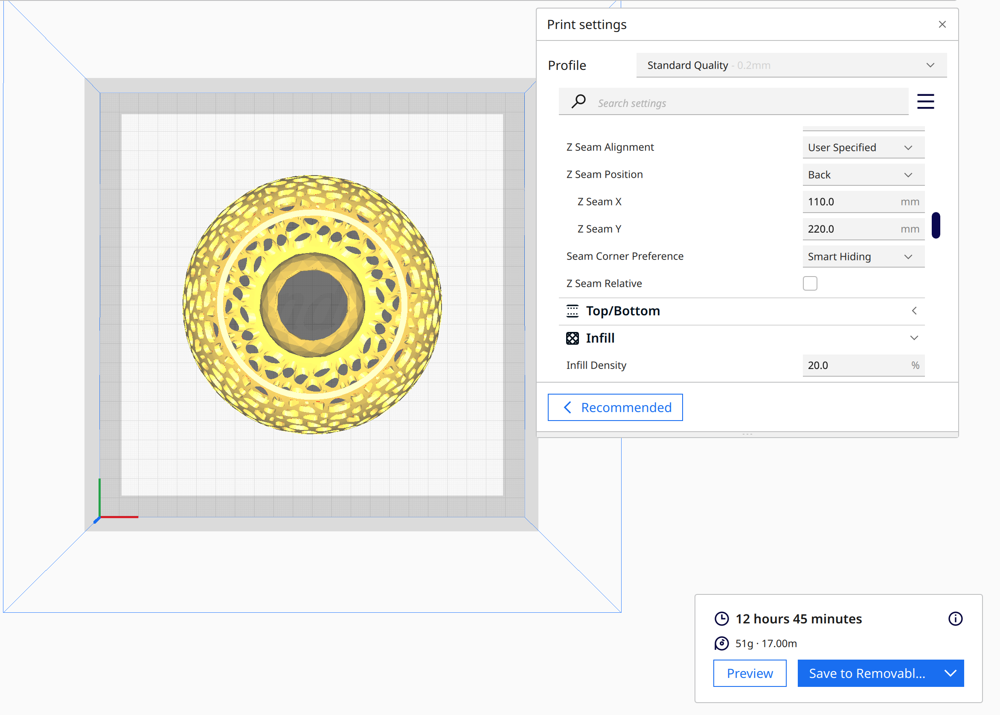

The Goal: Learn how to manipulate and change STL files and work with points and meshes in Rhino.
Tools Used: Rhino, Calipers, STL files from cults3D.com, lots of patience.


I had to manage my expectations with this assignment after finding an STL file of a lamp shade that I really liked and exporting it to Cura to slice and finding out that it would take roughly 2 and a half days to print. So I went back to the drawing board and looked at files on cults3D.com. I found an interesting looking coral inspired, round lamp shade and wanted another piece to anchor the shape to the light fixture.


After downloading the STL files and examining them in Rhino separately to get their dimensions using the Distance command, I measured my lamp hardware to understand the correct measurements that I would need to scale the points of the openings down to.
After measuring the lamp hardware, I knew that the hole for the cord to go through had to be greater than the size of the largest part of the plug (25.34mm) and smaller than the size of the largest part of the bulb fixture (37.18mm). I decided to scale the size of the two holes that I was joining down to 35mm. In the future I may decide to scale this down even further.
I used the ReduceMesh command to reduce the number of polygons in both the coral circle and the hourglass anchor shape. I changed the number of polygons in the coral circle from 100,000 to 50,000 and the hourglass shape from 1000 to 500.


I scaled the diameters of the circles of both mesh shapes down to 35mm and then used the Join command to join the two together. I tried to use the BooleanUnion tool but for some reason was unable to join the shapes with this command. However, I was still able to get a closed mesh with the Join command and when I exporteed the object as an STL and sliced it in Cura there were no issues.

Cura estimated the time to print at Super Quality to be 22 hours and at Standard Quality 12 hours. I am not sure if this is an appropriate amount of time for this model, but I would be curious to learn more about others and their projects and the estimated time to print!
Shout Outs: Akshay Rawat and David Pearl for their encouragement and help talking through assignments!